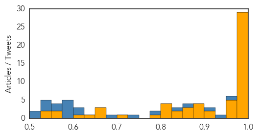
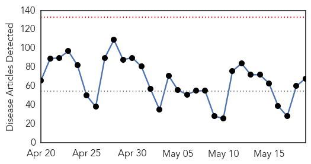
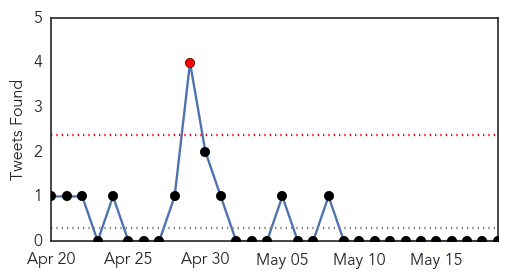
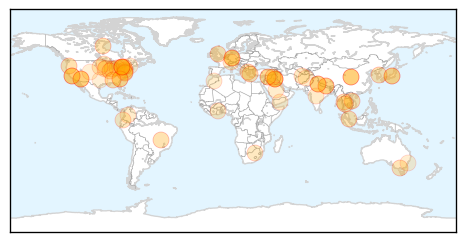

Ebola
30-Day Web Trend
0 alerts, 1 warnings

30-Day Twitter Trend
0 alerts, 0 warnings

Article Locations

Article Confidences
Top Articles:
- 1.000
- Doctors Link Risky Burials to Ebola Rise in West Africa
- 1.000
- Guinea registers 10 new Ebola infections
- 0.999
- Regional bloc expects Sierra Leone, Guinea free of Ebola -
- 0.999
- An herb may help fight Ebola
- 0.996
- WHO announces changes after widespread Ebola criticism
- 0.995
- WHO says Ebola "won't go quietly" as new case numbers edge up
- 0.995
- Ebola Cases Quadruple in Guinea and Sierra Leone as Rainy Season Sets In
- 0.995
- WHO Sets Up $100m Contingency Funds for Healthcare Emergencies, Articles
- 0.995
- How the World Is Wiping Out Killer Diseases
- 0.995
- Australian researchers examine Ebola vaccine trials as WHO admits failures 19/05/2015
- 0.995
- Ebola: Australian researcher helps to identify vaccine model
- 0.995
- Australian researcher helps with Ebola vaccine trials
- 0.995
- Independent Newspapers Limited
- 0.995
- The Chronicle of Higher Education
- 0.994
- Ebola: Australian researcher helps to identify vaccine model
- 0.993
- Frontline health workers were sidelined in $3.3bn fight against Ebola
- 0.992
- Nigeria’s Junior Health Minister Addresses WHO Assembly
- 0.990
- Australian researcher helps with Ebola vaccine trials
- 0.990
- FAO Representative meets with Ebola survivors in Sierra Leone - Sierra Leone
- 0.989
- Newcastle nurse wins top honour
- 0.989
- World Bank Group Ebola Response Fact Sheet - May 18, 2015 - Sierra Leone
- 0.988
- West Africa Avoids Brunt of Ebola's Economic Consequences
- 0.986
- Disease experts say WHO not equipped to respond to emergencies 19/05/2015
- 0.980
- Angela Merkel calls for broad contingency plan for next health crisis -
- 0.978
- Vaccines & Viruses: Troubled trials for Ebola vaccine
- 0.978
- German Chancellor Reiterates Need For Better WHO Management During Emergencies
- 0.978
- Citing ‘defining moment’ sparked by Ebola outbreak, WHO chief pledges reforms
- 0.976
- The anti-Ebola fight should be a collective effort
- 0.976
- Worlds Response Was Reactionary
- 0.972
- Bristol nurse returns to work after joining the fight against Ebola in Sierra Leone, West Africa
- 0.970
- Australian Nurses Receive Awards For Ebola Work
- 0.959
- Army researchers look for permanent end to Ebola virus
- 0.955
- Merkel plugs global epidemics plan at WHO conference
- 0.954
- Osterholm says US not prepared for disease outbreak
- 0.911
- Work to resume at Liberia hydro plant after Ebola outbreak
- 0.911
- ECOWAS 47TH Ordinary Session Opens; Extols Liberia’s Ebola-free Status
- 0.896
- Meet the teen who just won $75,000 for inventing a system to keep germs from spreading on airplanes
- 0.895
- "A very cruel disease" — Isle of Wight scientist speaks of her role in the fight against Ebola
- 0.894
- ECOWAS must tackle youth unemployment
- 0.891
- The orphans of Ebola: Heartbreaking tales of children whose parents were killed by disease who are now starving to death, committing suicide and being forced into sex trade
- 0.866
- New African center to tackle infectious diseases
- 0.864
- ISLAND MICROBIOLOGIST VOLUNTEERS IN EBOLA TREATMENT CENTRE
- 0.853
- Women Celebrate Liberia's Victory Over Ebola
- 0.849
- Sixty-eighth World Health Assembly opens in Geneva
- 0.847
- Newcastle nurse receives Florence Nightingale award for Ebola work
- 0.822
- 68th World Health Assembly Opens in Geneva
- 0.815
- Health requires a holistic view of being one with nature: Nadda
- 0.811
- WHO sets new priorities amid new global environment
- 0.806
- Need redoubled efforts towards public health challenges: Nadda
- 0.791
- Ebola diaries: Lessons in listening
Showing top 50 articles...
Top Tweets:
- 0.992
- Ebola diaries: Lessons in listening - World Health Organization http://t.co/pFWtWjrnOW ebola EVD
- 0.974
- Vaccines & Viruses: Troubled trials for Ebola vaccine - World Magazine http://t.co/9QtHcni5ET ebola EVD
- 0.972
- Liberia Ebola coord at WHA68: As Ebola cases are going down, the country is seeing increasing need for essential health care services
- 0.963
- Ebola from emergence to epidemic: the virus and the disease, global preparedness and perspectives http://t.co/snPJQfA9xe
- 0.942
- Dr Kargbo, Chief Medical Officer SierraLeone at WHA68: Ebola affected senior medical doctors in the country, many died
- 0.920
- Ebola Cases Rise in Guinea and Sierra Leone After Steep Drop - New York Times http://t.co/nwMalpO7e8 ebola EVD
- 0.914
- Lessons in listening - World Health Organization http://t.co/FYzaet2xNf ebola EVD
- 0.844
- Peabody Energy exploited Ebola crisis for corporate gain, say health experts - The Guardian http://t.co/gFtI21CpMt ebola EVD
- 0.844
- Peabody Energy exploited Ebola crisis for corporate gain, say health experts - The Guardian http://t.co/Cmch3gWemf ebola EVD
- 0.844
- Peabody Energy exploited Ebola crisis for corporate gain, say health experts - The Guardian http://t.co/1VcvyB9F6B ebola EVD
- 0.830
- Judge questions hospital company's motive in Ebola lawsuit - Dallas Morning News http://t.co/FepnlS6Nl2 ebola EVD
- 0.826
- An herb may help fight Ebola - Fox News http://t.co/EJGcGjSAtP ebola EVD
- 0.824
- In Fight Against Ebola, Front-Line Health Workers Risked Their Lives And Never ... - Newsweek http://t.co/TSvv5HShVu ebola EVD
- 0.784
- A look at how Nigeria beat the Ebola virus in just three months: http://t.co/k3bH5exVFU AfricaAgainstEbola
- 0.784
- A look at how Nigeria beat the Ebola virus in just three months: http://t.co/k3bH5egkOm AfricaAgainstEbola
- 0.780
- Here's how the declares the end of the Ebola outbreak in Guinea, Liberia or Sierra Leone http://t.co/omDAQ1cV6w
- 0.763
- 19 May news media on avianflu avianinfluenza Ebola EbolaResponse MERS NepalQuake WHA68 http://t.co/Fe7Y6upLHs
- 0.753
- NEW: The Role of Social Mobilization in Controlling Ebola Virus in Lofa County, Liberia http://t.co/aZh3InmYmr Ebola
- 0.740
- Dr R. Lamah, Min of Health Guinea: We experienced cultural difficulties in containing Ebola dealing w/activities, e.g. safe burials WHA68
- 0.725
- Assemblée mondiale de la santé : les leçons d'Ebola au menu de cette 68e session http://t.co/S8JDuncGIH
- 0.646
- Ebola claim from Manchester shisha bar defendant 'false' - BBC News http://t.co/7RcPHZZfHS ebola EVD
- 0.632
- Liberia’s Ebola epidemic shows us getting from a few to zero cases takes many months of intensive work EbolaResponse http://t.co/rnlULgbvJ7
- 0.627
- Since March 2014, @WHO has mobilized its largest response to the most severe & complex Ebola outbreak in history http://t.co/ddneSnG5lg
- 0.593
- Dr L. Bin, Min of the Natl Commission of Health & Family Planning, China at WHA68: Will continue to support Ebola-affected countries
- 0.587
- Leader Outlines Changes in Response to Ebola Epidemic WHA68 http://t.co/ZlsFnKtprC
- 0.574
- Two more Ebola cases recorded yesterday in Sierra Leone - in Freetown and Port Loko http://t.co/uajAqhq3Z0
- 0.568
- He got Ebola saving a boy's life, she now treats Ebola patients. How are they now? Find out @ 15:30 EDT on http://t.co/hOBT0CYeeQ
- 0.564
- RT: Liberia needs a total overhaul of its healthcare system, Foday says. The Ebola crisis is a call to the international world, …
- 0.556
- RT: Dame Stocking to WHA68: "there is considerable lack of confidence & trust in" due 2 it's lousy Ebola response.
- 0.555
- Dr Chan reminds countries to maintain infection control and high vigilance: Get to zero, maintain zero Ebola cases http://t.co/688xHd0RaJ
- 0.530
- RT: W.H.O. Leader Outlines Changes in Response to Ebola Epidemic http://t.co/9ymJC8G8ko
- 0.522
- Liberia Ebola coordinator at WHA68: Health care workers in the country went through 13 months sleepless nights, need to care for them
- 0.503
- We are committed to assisting all 3 Ebola affected countries get to zero cases and stay at zero cases. EbolaResponse http://t.co/GZzdnEWjAB
Unknown
30-Day Web Trend
0 alerts, 0 warnings

30-Day Twitter Trend
2 alerts, 1 warnings

Article Locations
Article Confidences
Top Articles:
- 0.978
- H58 Antibiotic Resistant Typhoid: Facts & Information
- 0.976
- Lyme disease: Doctors advise against long-term antibiotic treatment Republican American
- 0.939
- CDC: Beware of norovirus in untreated swimming water
- 0.923
- Nine State Salmonella Paratyphi B variant L(+) tartrate(+) Outbreak Sickens 50
- 0.917
- Chicago Tribune
- 0.917
- Chicago Tribune
- 0.917
- Chicago Tribune
- 0.917
- Chicago Tribune
- 0.917
- Chicago Tribune
- 0.917
- Chicago Tribune
- 0.917
- Chicago Tribune
- 0.917
- Chicago Tribune
- 0.917
- Chicago Tribune
- 0.917
- Chicago Tribune
- 0.917
- Chicago Tribune
- 0.917
- Chicago Tribune
- 0.917
- Chicago Tribune
- 0.917
- Chicago Tribune
- 0.917
- Chicago Tribune
- 0.917
- Chicago Tribune
- 0.917
- Chicago Tribune
- 0.917
- Chicago Tribune
- 0.917
- Chicago Tribune
- 0.917
- Chicago Tribune
- 0.917
- Chicago Tribune
- 0.917
- Chicago Tribune
- 0.917
- Chicago Tribune
- 0.917
- Chicago Tribune
- 0.917
- Chicago Tribune
- 0.910
- The world windows to Thailand
- 0.905
- Valley salmonella cases tied to larger outbreak
- 0.882
- Ticks found on Toronto's Algonquin Island being tested for Lyme disease
- 0.858
- Drinking water in Ararat to be fluoridated
- 0.807
- Nepal: Victims twice over - MSF continues to assist people affected by the two earthquakes - Nepal
- 0.784
- Nepal: Victims twice over - MSF continues to assist people affected by the two earthquakes
- 0.778
- Health officials monitoring ticks in Toronto
- 0.778
- Health officials monitoring ticks in Toronto
- 0.778
- Health officials monitoring ticks in Toronto
- 0.753
- Ghana certified as Guineaworm-free country
- 0.742
- Reaching Zero is Programs' Goal
- 0.735
- Pack the insect repellent to fend off ticks this Memorial Day Weekend
- 0.725
- Immunisation lapses behind deaths?
- 0.719
- Ghana Declared Guinea Worm Free Nation -
- 0.714
- Rampant corruption in health sector irks Faryab residents
- 0.713
- Ticks found on Toronto Island being tested for Lyme disease
- 0.699
- Vaccine shield against Japanese encephalitis
- 0.688
- Number of reported STD cases rising in SD
- 0.686
- Iowans increasingly worried about bird flu economic, job losses
- 0.683
- Northern Voices Online Indian minister addresses NAM Health Ministers’ Meeting Stresses on holistic health, Yoga
- 0.669
- Study reveals drones disaster benefits
Showing top 50 articles...
Top Tweets:
- 0.813
- HealthMap | Flu Map | Contagious Disease Surveillance | Virus Awareness http://t.co/r5mBQyeCVI
- 0.631
- RT: ULTIMA HORA: Hallan sin vida a la doctora del hospital de Bayamón que se hizo famosa en video en las redes sociales - Metro